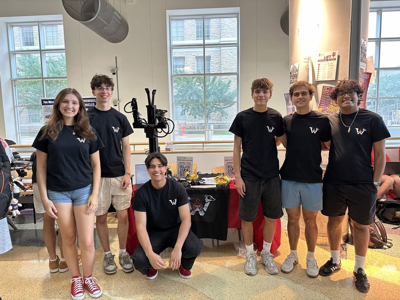

WiscoHumanoids
· Sponsorship Packet 2026–27
WiscoHumanoids
· Sponsorship Packet 2026–27

Letter of Introduction
Dear Prospective Sponsor,
A year ago, WiscoHumanoids was a handful of students with a seemingly insurmountable idea: to build a humanoid robot at UW–Madison, entirely from scratch. With humanoids rapidly emerging as one of the next big frontiers in tech, that idea caught on fast. More than 900 students have joined us, faculty have stepped up to support the team, and the university has generously provided us with the resources and support we need to build. At time of writing, parts for our legs are ordered, hands are being fine-tuned, and the arm is built. Our robot is coming together extremely quickly.
Why did we choose to create a humanoid? Our homes, infrastructure, and tools are all built with the human body in mind. A robot like us can work in that world without any special considerations. We want it carrying groceries, fetching medication, tidying up, and broadly assisting humanity as we progress.
If you choose to sponsor us, we continue to have the opportunity to generate extraordinary tech leaders, ... Your support turns that vision into motors, sensors, and machined parts, and turns our members into the engineers who will lead this field. We'd love to show you what we're building, so reach out anytime.
Thank you for betting on us.
Best,
WiscoHumanoids